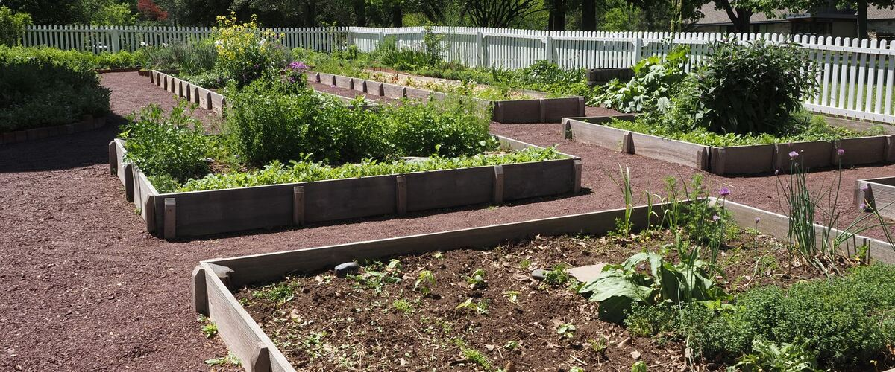
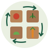

Crop Rotation for a Small Northwest Vegetable Garden
Winter is the time to plan next year's beds. A simple way to rotate vegetable families in a few raised beds, and the soil diseases it helps you avoid.
A rainy winter evening is a good time to sketch next year's garden. Before you decide what goes where, think about what grew in each bed this year. Planting the same family of vegetables in the same spot year after year lets their soil pests and diseases build up. Moving them around, called crop rotation, is one of the simplest ways to keep a garden healthy without sprays.
Rotate by family, not by crop
Pests and diseases usually attack a whole plant family, so moving tomatoes to where the potatoes were doesn't help: they're relatives. The families that matter most in a vegetable garden are:
- Cabbage family: broccoli, cabbage, kale, cauliflower, Brussels sprouts, collards, kohlrabi, bok choy, radishes, turnips and arugula.
- Tomato family: tomatoes, potatoes, peppers, eggplant, tomatillos and ground cherries.
- Peas and beans: peas, bush and pole beans, and fava beans.
- Onion family: onions, garlic, leeks, shallots and chives.
- Squash family: zucchini, winter squash, pumpkins, cucumbers and melons.
- Carrot family: carrots, parsnips, celery, parsley, dill and cilantro.
- Beet family: beets, chard and spinach.
Lettuce, corn and most herbs can fill gaps wherever there's room.
What it actually prevents
Rotation works on problems that live in the soil. Several are common in wet, acidic Northwest gardens:
- Clubroot swells and distorts the roots of cabbage-family plants, which wilt on warm afternoons and stay stunted. Its spores can survive in soil for many years, so once you have it, keep cabbage relatives out of that bed as long as you can. Acidic soil makes it worse; our soil pH guide covers liming.
- Cabbage root maggots spend the winter in the soil as pupae under last year's broccoli and cabbage, then emerge right where this spring's transplants go in.
- Onion white rot, a fluffy white fungus on garlic and onion bulbs, can last in the soil for decades. If you see it, stop growing the onion family in that bed.
- Potato scab and Verticillium wilt build up where potatoes and their relatives grow year after year.
Rotation does little against problems that blow in on the wind. Late blight spores travel for miles, and powdery mildew on squash arrives every late summer no matter where you plant. Those need resistant varieties and good spacing instead. Do dig every last potato, though: leftover tubers sprout next year and can carry blight back in.
A simple four-bed plan
If you have four beds, or one bed split into four sections, group the families so each bed holds a set that grows well together, then move each set one bed along every year:
- Tomato family, with squash family alongside if there's room.
- Peas and beans, followed in late summer by fall greens.
- Cabbage family.
- Roots and onions: carrots, beets, onions and the fall-planted garlic.
Next year the tomatoes move to bed 2, peas to bed 3, and so on. Each family comes back to the same soil every fourth year. The order has a logic: the heavy-feeding cabbage family follows peas and beans, and roots follow cabbage on the leftover fertility. Don't worry about getting it perfect; any gap of two or three years is far better than none.
When you only have one or two beds
- Rotate within the bed. Split it into halves or quarters and shift the families around them each year. Even a few feet helps.
- Use containers. Grow tomatoes or potatoes in large pots of fresh mix on alternate years, which gives the bed a break. Our container guide has sizes.
- Use the off-season. A winter cover crop or a layer of compost between crops keeps the soil healthy, and its life works against soil-borne diseases.
- Know your trouble spots. If one family has struggled in a bed, that's the one to move first.
Write it down
The hardest part of rotation is remembering what grew where. A quick sketch of your beds with this year's crops, kept with your seed packets, solves it. When you're ready, the garden planner builds next year's planting dates for your town.

Raised beds of cabbage, tomatoes and marigolds in late summer. Photo: Janelle Burklund, contributor